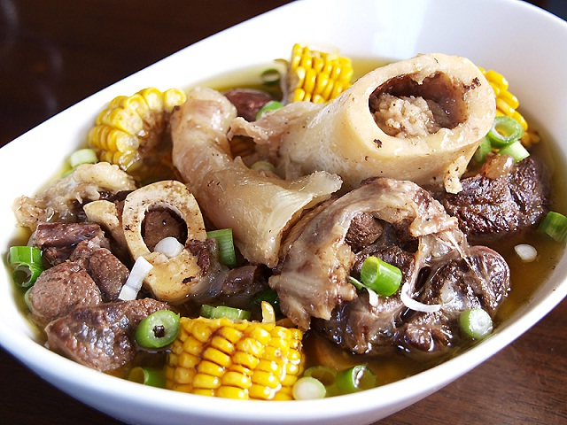
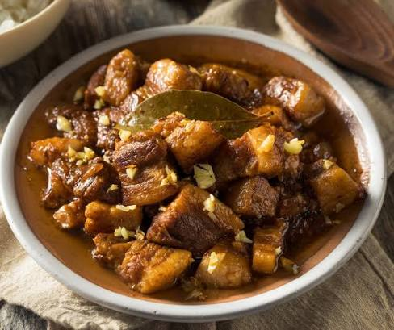
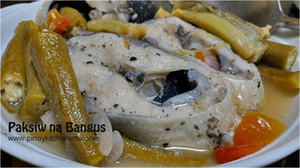
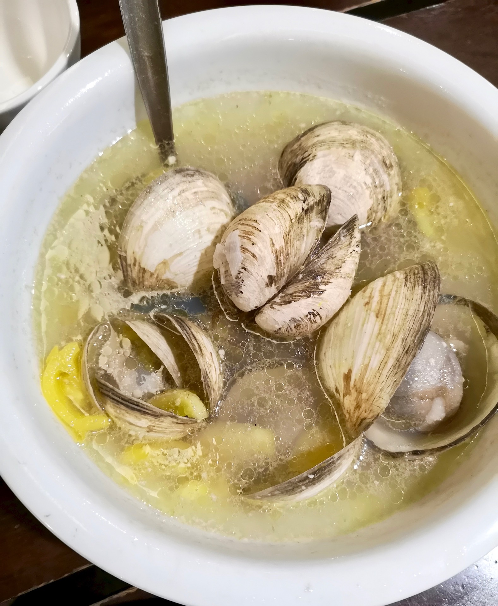
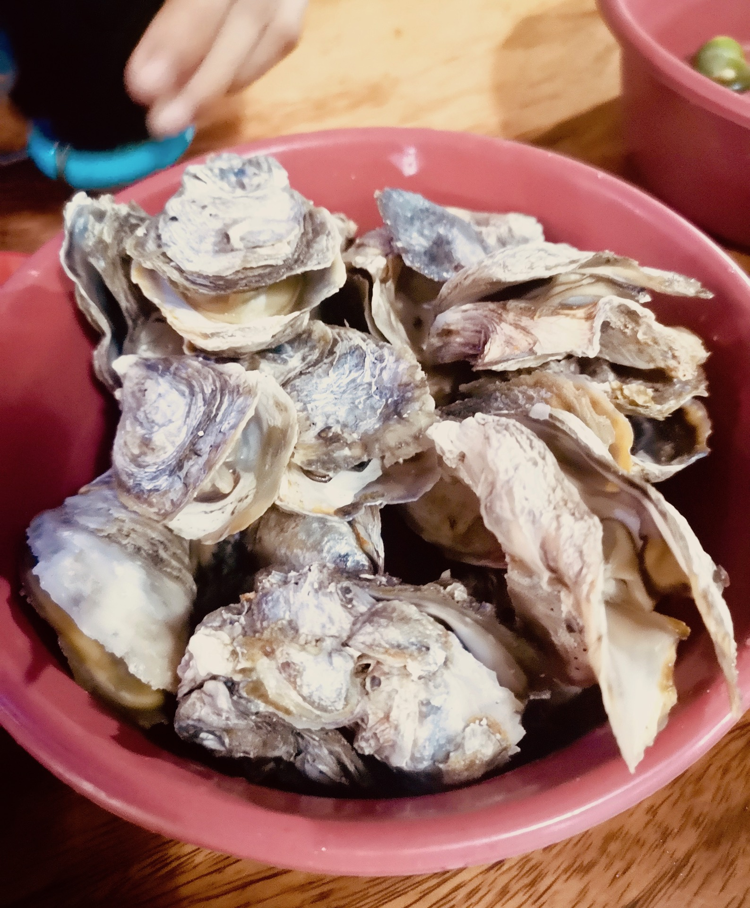
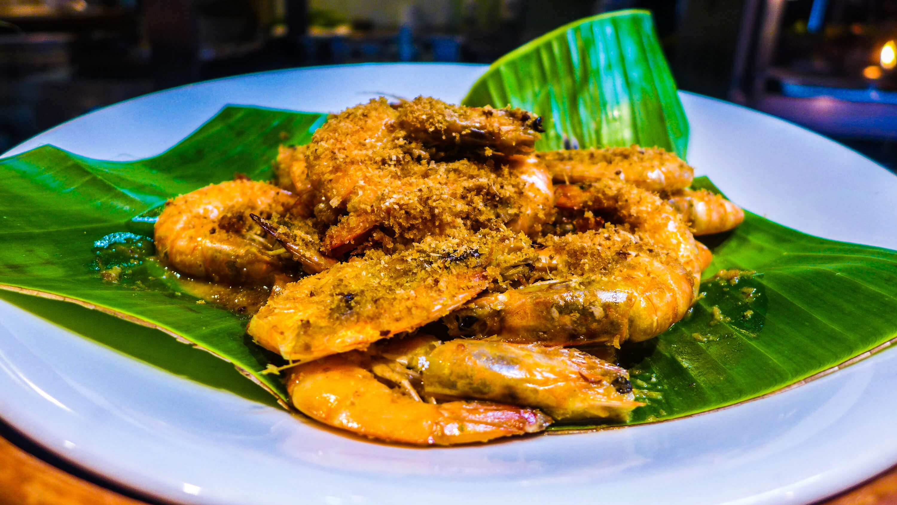
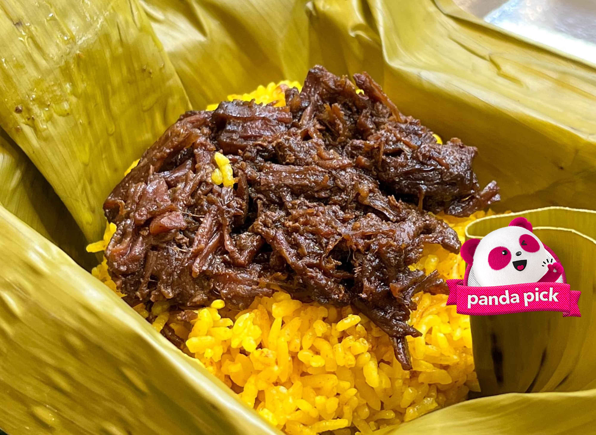

TOURIST DESTINATION
| HOME | PLACES | FOOD |
|---|
LUZON
 Bulalo is a traditional Filipino soup made from slow-cooked beef shanks and bone marrow. The word itself refers to the rich, buttery bone marrow central to the dish. It is typically simmered until the collagen breaks down, creating a savory, rich broth. |
 igado is a savory and tangy Filipino pork and liver stew originating from the Ilocos region. Its name comes from the Spanish word higado (liver). It is made with thin, lengthwise strips of pork loin, liver, and sometimes innards, simmered in a rich soy sauce, vinegar, and garlic base. |
 Filipino adobo is the unofficial national dish of the Philippines and a popular cooking method. It features meat, seafood, or vegetables marinated and simmered in a savory, tangy sauce made of vinegar, soy sauce, garlic, bay leaves, and black peppercorns, typically served over steamed rice. |
VISAYAS
 Paksiw na Bangus is a classic Filipino dish where milkfish (bangus) is simmered in a tangy, savory broth made of vinegar, garlic, ginger, onion, and spices. It typically includes vegetables like eggplant and bitter gourd (ampalaya), and is usually eaten alongside steamed white rice. |
 A clam shell is a hinged, two-part protective exoskeleton belonging to marine or freshwater bivalve mollusks. Made primarily of calcium carbonate secreted by the organism's fleshy mantle, it is held together by an elastic ligament and powerful adductor muscles that tightly seal the shell when closed. |
 Talaba is the Filipino word for oyster, a popular marine bivalve mollusk known for its rough, irregular shell and briny, savory flesh. Highly valued in Philippine seafood, it is prized both as a fresh delicacy and as a nutritious food packed with protein, zinc, and omega-3 fatty acids. |
MINDANAO
 Rendang is a rich, slow-cooked meat dish from West Sumatra, Indonesia. Braised in coconut milk and a spiced paste of chilies, lemongrass, and galangal, the liquid reduces over several hours until the meat caramelizes. This process creates a deeply flavorful, tender, and melt-in-the-mouth texture. |
 Shrimp are small, swimming decapod crustaceans with elongated, semi-transparent bodies and flexible, fan-like tails. They have 10 walking legs, whiplike antennae, and are highly prized globally as a versatile, nutrient-rich seafood, highly regarded for their slightly sweet and briny flavor. |
 Pastil is a traditional Filipino delicacy originating from Maguindanao, Mindanao. It consists of steamed rice topped with kagikit (sweet and savory shredded chicken, beef, or fish). The meal is tightly wrapped in a warm, oiled banana leaf in a cylinder shape and is often eaten with hard-boiled eggs, cucumber, and chili paste (palapa). |